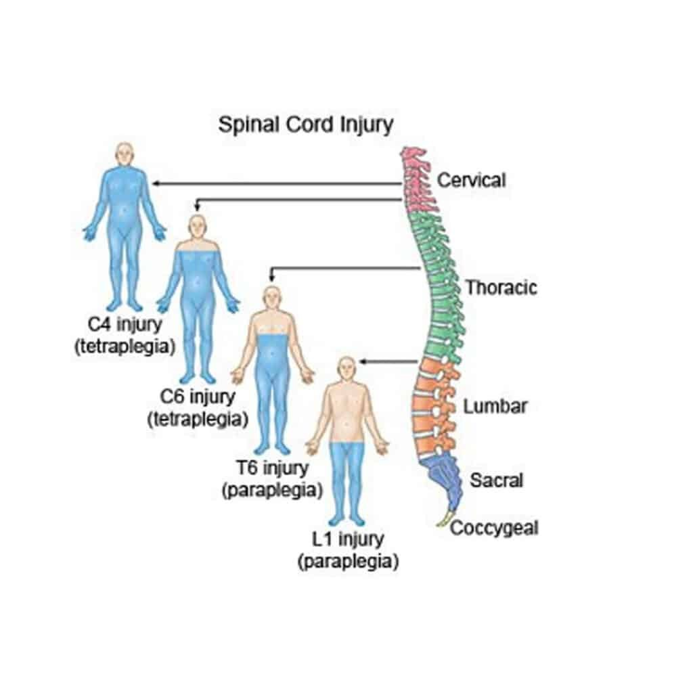
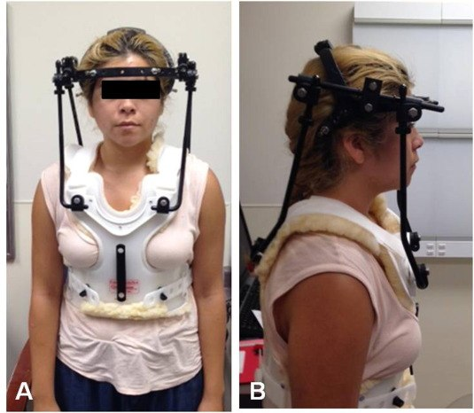
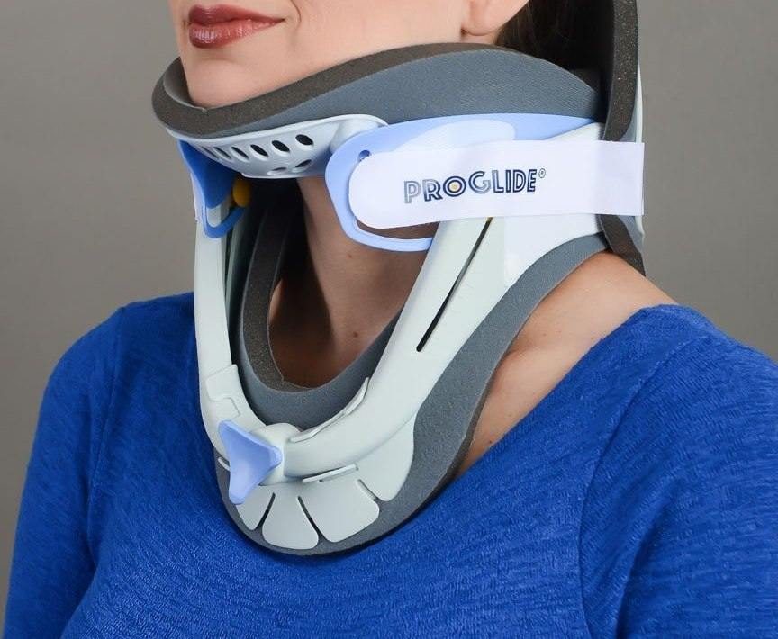
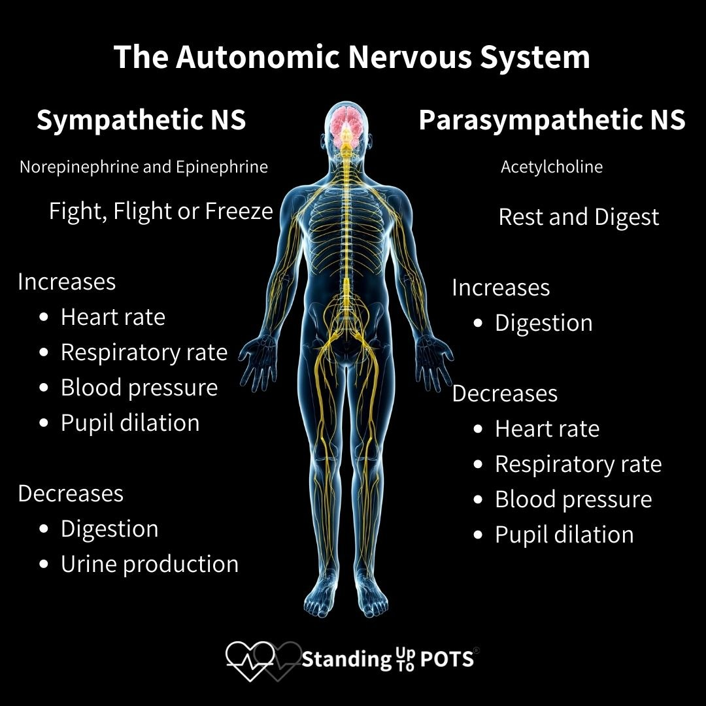

Day 3 · Topic 5
Spinal Cord Injury
Spinal Cord Injury (SCI)
Who Gets SCI, and How
- Most common at ages 16 to 30.
- Causes: motor vehicle accidents, falls, acts of violence (gunshots, stabbings), sports injuries, diving accidents.
- TBI and SCI often go hand in hand.
- The level of injury decides the long-term effects to anticipate. C4 and C6 injuries: tetraplegia. T6 and L1 injuries: paraplegia.

Pathophysiology of SCI
What Happens to the Cord
- With or without injury to the vertebrae, which house the spinal cord.
- Complex, multifaceted biochemical changes in the cord: the secondary injury.
- As in TBI and stroke, the biochemical inflammatory response on top of the primary injury causes much of the damage.
Spinal Cord Edema
From the inflammatory response. Compresses the tissue and the blood vessels. Can ascend or descend from the level of injury.
Microscopic Hemorrhages
Vascular changes: bleeding into the gray and white matter. The edema worsens.
Ischemia
Blood flow decreases further.
Axonal Degeneration
The nerves fail to conduct: the permanent loss of function.
Secondary injury in TBI is taught in Brain Injury and Stroke
Two Types of Shock
Spinal Shock
- Electrical silence of the cord below the level of injury: complete loss of motor, sensory and reflex activity, at the level of injury and below.
- Begins within minutes of the injury. Can last up to 6 weeks.
- The permanence of the injury is not known until it resolves: the secondary injury can still spread up or down.
- Resolution: usually signaled by the return of deep tendon reflexes. Rarely, motor and sensory function return.
Neurogenic Shock
- Disruption of autonomic function below the level of injury: the pathways are damaged.
- Sympathetic input lost: vasodilation, a distributive shock.
- Manifests as hypotension, bradycardia, hypothermia.
- Can occur during spinal shock. Duration variable.
- Resolution: signaled by the return of sympathetic tone.
- Not always: depends on whether the lesion is complete or incomplete. More likely with an injury at T6 or higher.
Distributive shock is taught in Shock, Sepsis, MODS
Complete vs Incomplete Lesion
| Lesion | Function Below the Level of Injury |
|---|---|
| Complete | Total, permanent loss of sensory and motor function. |
| Incomplete | Some motor and sensory function spared. |
The lesion type reflects the severity of the injury.
Assessment of SCI
Airway and Respiratory: The First Priority
Why Breathing Is at Risk
- An injury at the cervical or thoracic level can affect the diaphragm.
- No nerve stimulation to the diaphragm: no independent breathing.
- Paralysis of the diaphragm: intubation and mechanical ventilation.
C1 to C3
Ventilator dependent.
C4 or C5
Will need a phrenic nerve pacemaker.
C5 to C6
Typically intact diaphragmatic breathing. Varying impairment of the intercostal and abdominal muscles.
T6 and above: very high risk for breathing issues. An incomplete lesion above T6 varies: watch these patients very closely for airway and respiratory problems.
Assessing the Other Systems
| Assessment | What to Know |
|---|---|
| Neurologic |
|
| Temperature management |
|
| Hemodynamics |
|
| Bowel and bladder function |
|
| Skin |
|
| Psychosocial |
|
Paralytic ileus is taught in GI Critical Care Issues
Psychosocial support after a neurological injury is taught in Neuro Assessment and Increased ICP
Interventions for SCI
| Intervention | What to Know |
|---|---|
| Skin assessment |
|
| Immobilization |
|
| Perfusion |
|
| Bowel and bladder regimen |
|
| Heparin and VTE prophylaxis |
|
| Nutrition |
|
Preventing DVTs and PEs is taught in the Respiratory Diseases review


Autonomic Dysreflexia
| Autonomic Dysreflexia | What to Know |
|---|---|
| What it is |
|
| Who and when |
|
| Triggers |
|
| Signs and symptoms |
|
| Treatment |
|
